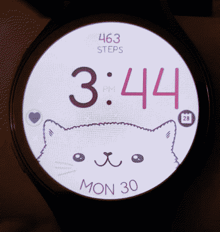

i am tired, but also a bit joyful01.jan.24 
tired
i think i have spent the majority of december sick. within the last two months, i have gotten sick 3 times...  2 times with a cold, and then i got the flu. i blame my retail job for all 3 times i got sick. it sucks. specially when you're sick and you have to go to work like that or else they'll remove attendance points out of your profile which can make you get terminated. i love life. i don't ever wanna work while sick but it's either that or getting fired and finding another ass job.
2 times with a cold, and then i got the flu. i blame my retail job for all 3 times i got sick. it sucks. specially when you're sick and you have to go to work like that or else they'll remove attendance points out of your profile which can make you get terminated. i love life. i don't ever wanna work while sick but it's either that or getting fired and finding another ass job.

joy and whimsy
i, at the very least, was able to enjoy the 25th relatively healthy. i spent sometime with my family and my girlfriend. my dad got me a samsung galaxy watch 6. my first and previous smart watch was a fitbit versa 2 watch. it still works wonders to this day. i find it a pretty cute and charming watch overall, but the galaxy watch has a lot of new stuff that my fitbit didn't have. including more apps and a speaker! which means i can now pick up phone calls from my silly ass watch. awesome!
my beautiful WONDERFUL girlfriend got me this little prince lego set ?!?!?!? it took me 2 hours to build it and it was pretty easy! i had never built something like this so this was a very pleasant surprise to me. i actually cried when helena handed it out to me. the little prince is such a precious story to me. i really love this little guy.
and last but not least, i algo received a beautiful postcard from Arachne!

tired, again

then the next day my whole body started aching. uh oh. this time it was a type A flu. given that it is more severe than just a cold, i did stay home instead of sacrificing myself (AND OTHER PEOPLE...) by going to work. and man. do i miss being in my bed while sick.
i took advantage of this and started watching things i've been meaning to watch for a while. i managed to finish revolutionary girl utena as well as adolescence of utena. and let me just tell you. wow. that really was art. it left me with the same feelings that binge watching madoka magica back in 2016 made me feel. speechless and a little bit confused. because of this, i am also in the middle of watching the madoka movies (beginnings and eternal) since i've never watched them because it's just the same as the anime but with a few extra steps. and that night all of a sudden...
happy ne- *explodes like a power generator*
during the morning of december 31st there was a massive blackout throughout Puerto Rico because of the incompetent company that handles our power grid. sigh. i spent 27 hours with no electricity. during new year's of all days. lovely.
i went outside during midnight, the entire street was just pitch black, but people still lighted up those fireworks they have been waiting to light up til now. i didn't have a lot of phone signal for the majority of the day so i just said "happy new year" to steve and went back to bed to listen to my CDs. having a battery power CD player and a couple of your favorite albums WILL save you.
so, how was my 2024?
honestly i got a lot done this year. you can see a pretty well summarized retelling of the past year on my scrapbook. it was definitely a bit hectic compared to other years. i still miss my grandma a lot and i think about her almost every day. but i also managed to get back into university and i've been really enjoying my time there. i got to make new friends too! i think it has also helped me to take my mind off a bit from my grandma's passing. nonetheless, i think this year i have been the happiest i have ever been in a while. and to me that is a huge achievement.
this year i also got a WHOLE lot more of messages regarding my site. thank you very much to everyone who has written me a nice message  even if i don't answer it, i still appreciate them.
even if i don't answer it, i still appreciate them.
for 2025 i am hoping to fully develop my brain and also get my first tattoo.